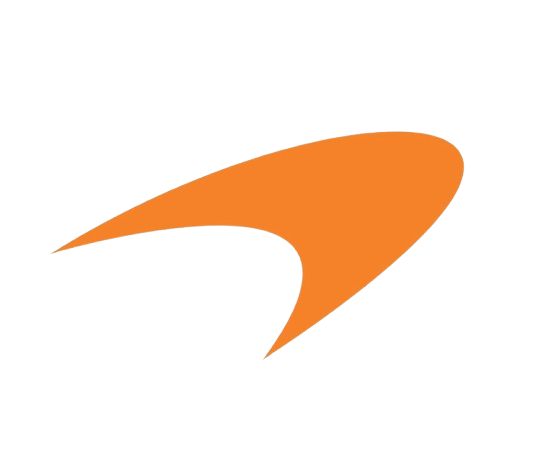
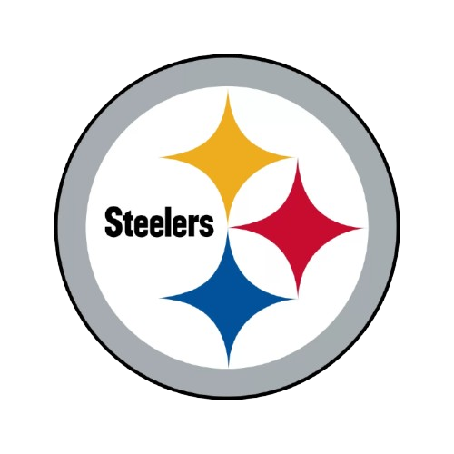
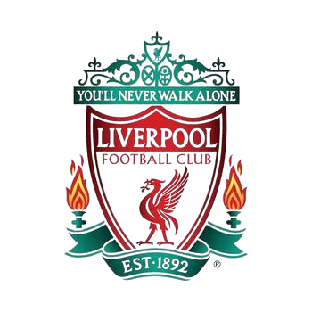

About Me
My name is Liya Sojan, I am currently a Computer Science major studying at Georgia State University.
Being surrounded by technology from a young age, allowed me to develop a deep passion for Computer Science, all thanks to my dad who would work on various types of tech gadgets.
This passion would make me research and follow all the latest tech trends, and help my dad work on whatever project he was doing. When I entered eighth grade, I joined robotics, which introduced me to programming. Within my first year, my team competed in the World Championships,
which made me more passionate and drove me to become better at what I do by developing my skills. Throughout high school, my team would consistently qualify for state championships, win different awards and competitions, and compete in the World Championships in my last two years.
Computer Science has been a passion for me from a young age. I love learning new topics, applying it with projects, and helping others learn with me.
Skills
- Html
- CSS
- Python
- Java
- C
Goals
- Graduate with a Computer Science Degree
- Get a job as a software developer
- Build a strong portfolio/resume that showcases my skills
- Connect with people who have experience in the field
- Complete the web development course with an A
My Favorite Sports
| Sports | Favorite Team | Favorite Player |
|---|---|---|
| Formula 1 | Mclaren
 |
Lando Norris |
| NFL | Steelers
 |
Cam Heyward |
| Soccer | Liverpool
 |
Mohamed Salah |
Favorite Quote
Do the best you can until you know better then when you know better, do better"
-Maya Angelou